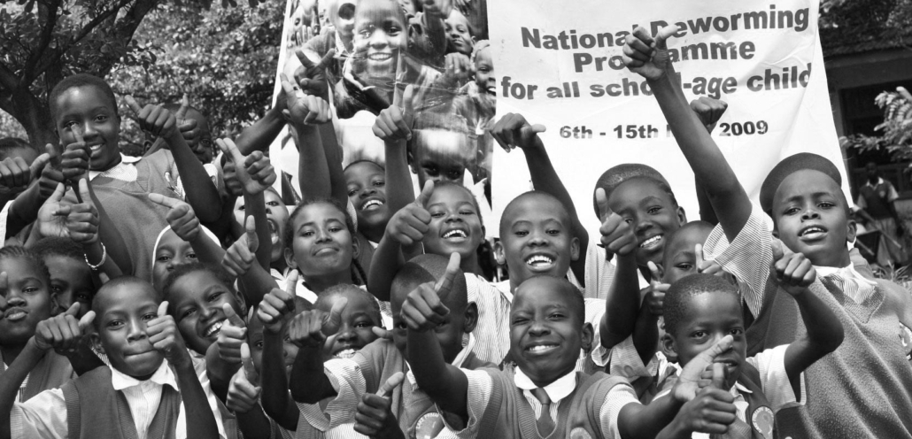

Philanthropy
We support communities facing challenges such as poverty, limited access to education, healthcare and nutrition.

Gen to Gen Foundation is a nonprofit organisation focused on philanthropy, youth empowerment and mentorship.
The organisation works to support young people, elderly people and vulnerable communities in South Africa.
We support communities facing challenges such as poverty, limited access to education, healthcare and nutrition.
We aim to provide young people with support, opportunities and resources that can help them develop confidence and resilience.
Mentorship provides young people with guidance, encouragement and knowledge.
There are different ways to support the work of Gen to Gen Foundation.